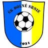

Posledný zápasPrípravka U9

ŠK Dolné SrniedomáciBeckov U9hostia
Výsledky prípraviek sa nezapisujú
Návrh webu · nie je to oficiálna stránka klubu
III. liga prípraviek U9, 8. miesto z 8
Posledný zápasPrípravka U9

ŠK Dolné SrniedomáciVýsledky prípraviek sa nezapisujú
Tím v tomto ročníku zatiaľ nemá výsledky. Rozpis zápasov je nižšie.
III. liga prípraviek U9
| # | Tím | Z | V | R | P | Skóre | B |
|---|---|---|---|---|---|---|---|
| 1 | ŠK Dolné Srnie | 9 | 2 | 5 | 2 | 40:42 | 11 |
| 2 | 8 | 1 | 7 | 0 | 18:6 | 10 | |
| 3 | 7 | 1 | 6 | 0 | 17:7 | 9 | |
| 4 | 8 | 0 | 8 | 0 | 0:0 | 8 | |
| 5 | TJ Jednota Brestovec | 9 | 0 | 7 | 2 | 10:28 | 7 |
| 6 | 8 | 0 | 7 | 1 | 7:11 | 7 | |
| 7 | 5 | 1 | 4 | 0 | 14:12 | 7 | |
| 8 | OŠK Slovan Beckov | 6 | 0 | 6 | 0 | 0:0 | 6 |
Hráči, ktorí v kalendárnom roku 2026 nastúpili alebo boli v nominácii na zápas (podľa Sportnetu). Pri mládeži uvádzame len mená.